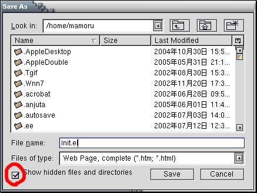
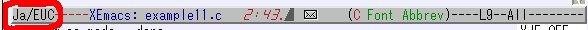

xemacsの設定
コメント文やprintf文の中に日本語を使用した時に，コンパイル
エラーとなる人
ソースファイルカラー表示したい人
印刷がうまくできない人
は，以下の設定を行ってください．
- .xemacs という名のディレクトリをホームディレクトリに作る
- init.elを .xemacs ディレクトリに保存(右クリック)
右クリックでダウンロードできます．
.xemacsディレクトリが見えない場合は，
ダウンロードの際に，"隠しファイルやディレクトリを表示する"
をチェックしてください．

- xemacsを起動している人は，一度終了し，もう一度起動してください．
- 新しく，○○○.cという
C言語のソースファイルを作ったときに
左下の部分が Ja/EUC となっていればOK．

既に作ったファイルが，MULE/7bit となってしまっている場合は
日本語コードの変換
を参照してください．
戻る
このページへのお問い合わせは君塚(
kimizuka[atmark]me.es.osaka-u.ac.jp)まで
$Last Updated: Sep 25 2008 $